战术理论：斜线性（Diagonality）
Tactical Theory: Diagonality
过去几年里，本网站上经常提到、却至今鲜有阐释的主要概念之一，就是"斜线性（Diagonality）"。无论是在关于盲侧（the blind side）的理论文章中，在关于关系型足球（relational football）的讨论中，还是在 2014 年关于肋部（The Half-Spaces）的经典之作里，斜线性要么扮演隐含的角色，要么扮演极其显眼的角色。然而，此前从未有过对这个话题的真正深入探讨——直到现在。Spielverlagerung 的"愚人们（The Fools）"自豪地推出：一篇关于一个角度的文章。斜线性，登场。
本文由 Addis Worku、Martin Rafelt、René Marić、George Jones & Judah Davies 合作撰写。
那么，它到底在讲什么？
"向前打""向前想"或"垂直推进（play vertical）"，是过去几年——或许也是任何类型的团队足球开始以来——的核心执教理念。其逻辑如此简单，以至于解释起来都让人尴尬：如果可以，就朝球门方向打，这样你就能进球。如果可以，就向前推进——随你怎么定义"后者"，定义还千差万别。有些球队更有耐心（说的就是你，瓜迪奥拉的门徒们），有些球队试图用激光把它打穿（说的就是你，杰西·马什），还有些球队越过——而非绕过——任何障碍（通常叫"对手"），从它们头顶上过去（说的就是你，里普的信徒们）。
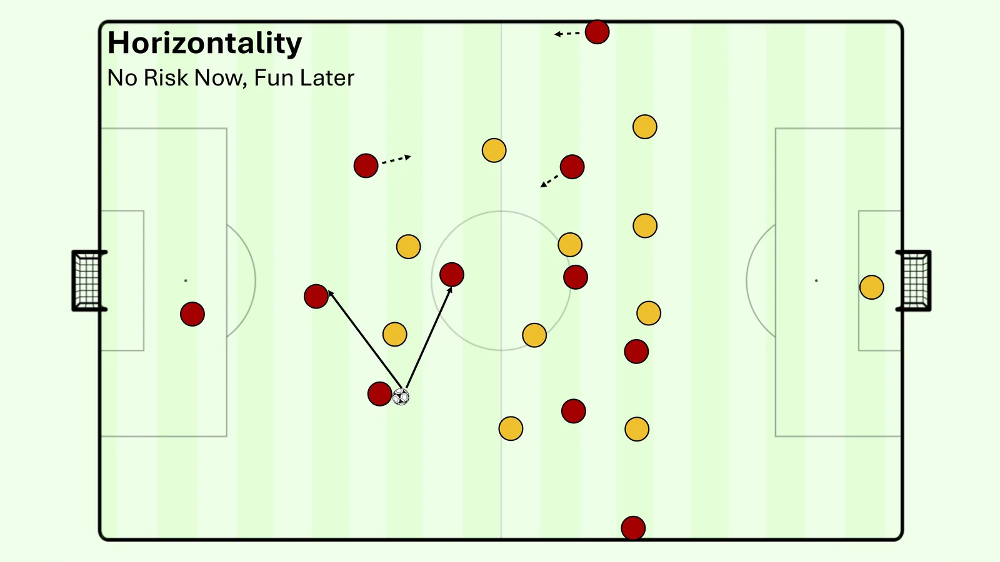
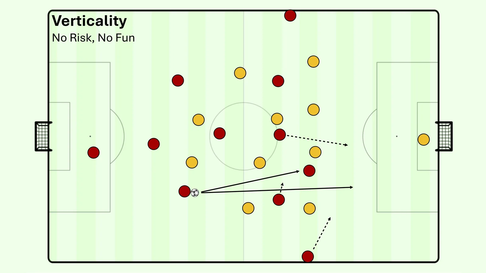
人们常常认为，在地面上、用更短更慢的传球组织所带来的丢球风险，可以通过反抢或"争抢第二落点"来化解。可以说，这是一种"宁可在他们那里丢球，也不在我们这里丢球"的哲学。有时，这两种看似对立的进攻方式——更偏转换进攻还是更偏控球进攻——之间的差别，被归结为打得更横向还是更纵向。显然，这类区分一如既往地缺乏真正的理论基础，不过是主观观察的替代品。当然，每支球队都想进球，而对每支球队来说，把球朝位于球场中央的球门推进，通常都会提高这一概率。达成它的方式千差万别（也就是说：无穷多），但有一个核心理念，无论一支球队、一名教练或一名球员想怎么踢，都可能带来优势。
斜线性：（姑且假定）两全其美
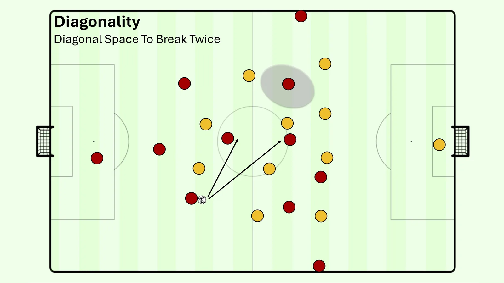
在根本上，斜线性试图连接两个方面：垂直传球的（假定的）推进性与水平传球的（假定的）安全性。为什么我们要把"假定的"加在括号里？首先，一次水平传球有时比一次垂直传球更能准备、甚至更直接地推进。边路的一次垂直传球所赢得的空间，少于从边路到中路的一次水平传球所赢得的空间。其次，虽然大多数球队在防守时确实努力"到球后面去"，因而水平传球通常更安全，但它仍有被拦截、或成为逼抢触发点的风险。而且，由于两名球员之间是横向连接，还额外承担着传球者和接球者都被暴露的风险；而垂直传球的优势在于，球队丢球后通常还能在转换中朝前防守。
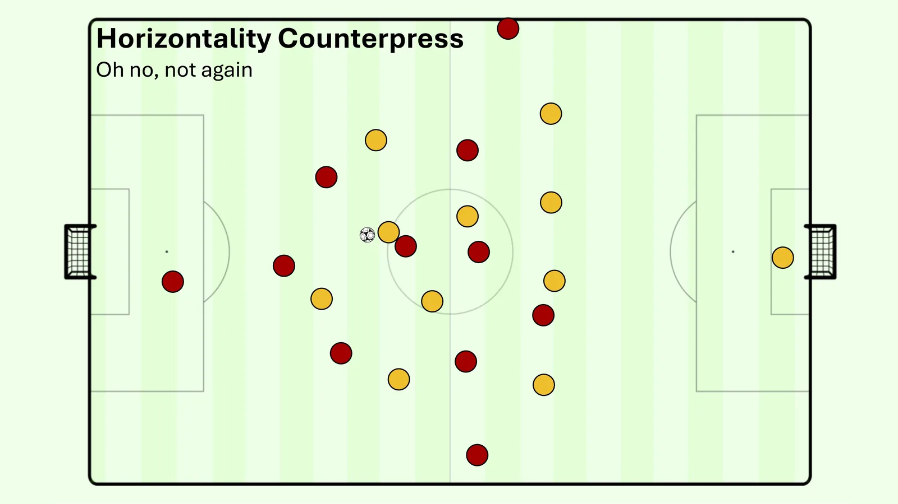
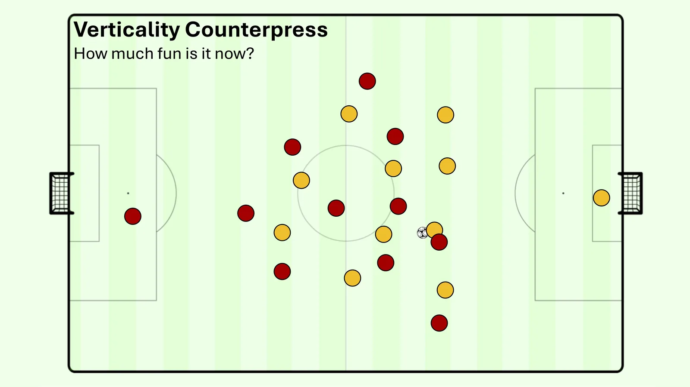
一次斜线传球假定能混合两种优势、抵消两种劣势：以更小的风险推进，以可反应的机会保有控制。此外，在感知和执行层面还有额外优势。先想象自己是名防守者。你必须预判球的动作，才能决定自己的行动、并与队友协调。通常，你要么封堵球通往球门和/或某名对手的路线，要么是掩护正在封堵的队友。一次水平传球停留在你身前；你的眼睛和身体同步地跟着球，无论从身体移动还是感知上都是如此。一次垂直传球朝你而来，自然而然地把你卷向它，而且多数时候这往往是正确的决定（一些直接的传球配合试图转移这一点）。
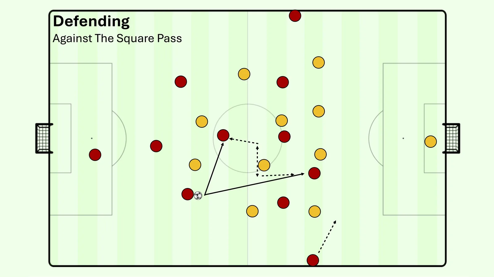
对手的一次斜线传球会提出更多问题。你的身体必须转身，你的眼睛不能只聚焦于周边视野，而必须在原先的盲区里摄入大量信息。你该如何转身、如何加速？你是跟着这次传球，还是垂直后撤以应对可能打到你身后的动作？危险在于：你或许不得不在获得信息之前就做出决定。这也部分解释了为什么"扫描（scanning）"以及球员之间的呼应是如此重要：尽早收集信息，以做出决定并采取正确的行动。
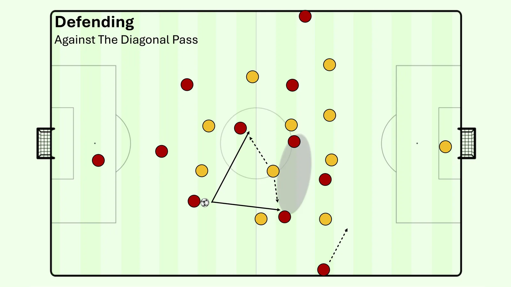
另一方面，想象你处在进攻球员（无论是传球者还是接球者）的脑子里。你的身体语言通常过早地泄露了至少部分意图。你行动的时机和速度或许能抵消这一点，正如伪装意图或用移动欺骗一样。由于上述这些方面，一次斜线传球至少含有这类元素的一部分：它加速了比赛，伪装了意图，让防守者更难，反过来让传球者更容易。
同样，斜线传球的接球者通常面临的任务，比横向或纵向接球时更简单。再用一次我们的"作弊码"——想象这一华丽的超能力。如果你真的在理想情境下接到那记所谓的理想传球——在球场中央、垂直地穿过球场中路——情况也并没有你想象中那么容易：你接球后得转身，然后朝球门打出尽可能最好的射门（或任何后续动作）。原地转身？转向侧面？你需要几脚触球？你能不用任何多余触球就转身吗？
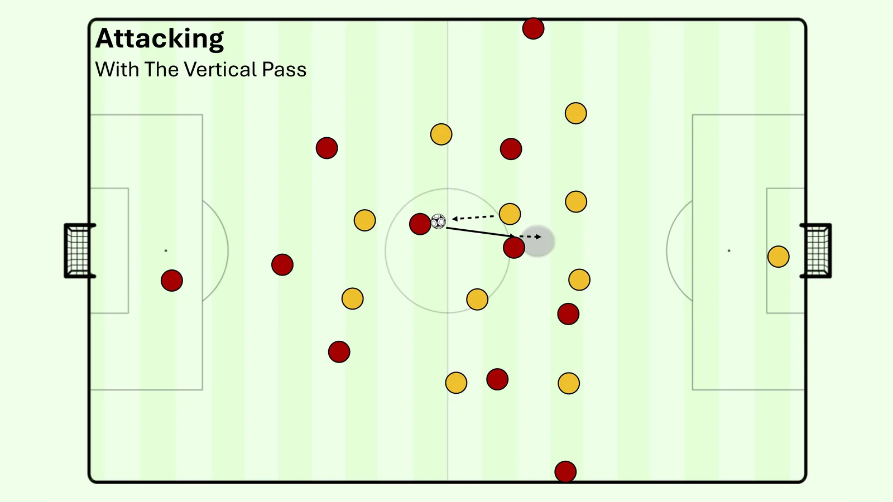
把它与从斜线传球中斜向接球的情形相比。球在你的视野里，你偏好的后续动作方向也在其中。你的身体姿态通常已经处在可以推进的位置，因为你用一只脚接球、随后要么直接用另一只脚继续、要么用任何形式的假动作再次用同一只脚，视情况而定。即便是一次纯水平传球，也会带来一些斜线传球没有的问题。
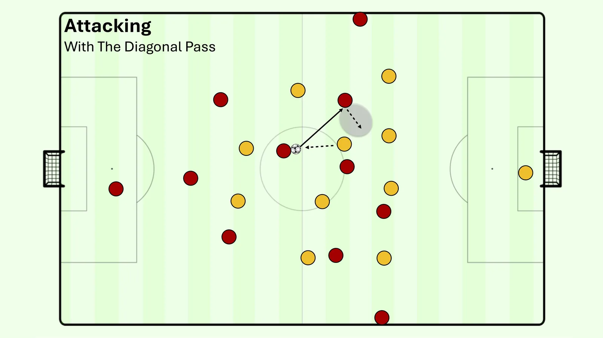
显然，我们不再有像纵向连接那个例子里那样原地急转的问题。但一次水平传球，视情况和速度，可能会逼你奔向某个方向。停下来，你就有被压迫、被暴露的风险（停下一次垂直来球，通常是一个护球动作）。不停，让它从你身边滚过去，你就得去追它，通常是追向场外。给它一个方向，你就给了防守方一个提示——这本身不一定是问题，但如果你第一脚触球后不保持选项开放，就会变成问题。如果你想推进，你就得改变方向，而这又让它更难完成。在斜线情境中，你在这些方面有更多回旋余地。现在，让我们从这一话题斜向移动，转向更具体的方面。
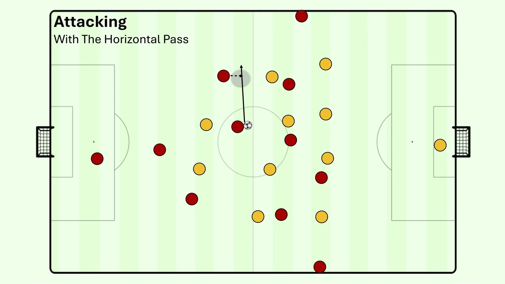
斜线性：在中路与从中路
显然，这些情境常常假设球场上某种既定的、有几分随机的情形。正如我们在肋部那篇文章中所做的那样，我们可以把球场划分为若干区域——这些区域事实上并不存在，但由于比赛的进球导向性质，作为简化和解释的工具仍有其使用理由。多数情况下，球队都计划控制球场中路。防守端，这由来已久，许多人已掌握这门艺术。进攻端，情况仍不那么清晰，因为球在脚下而非手上本身就带有不确定性；但过去二十年里，球队在这方面已大幅进步，其巅峰——相对于当时的防守而言——或许是瓜迪奥拉麾下的巴塞罗那，或者说，拥有布斯克茨、哈维、伊涅斯塔和梅西的那支巴萨。如果首要理念是从中路、并经由中路的控制和推进，那么斜线性如何介入？
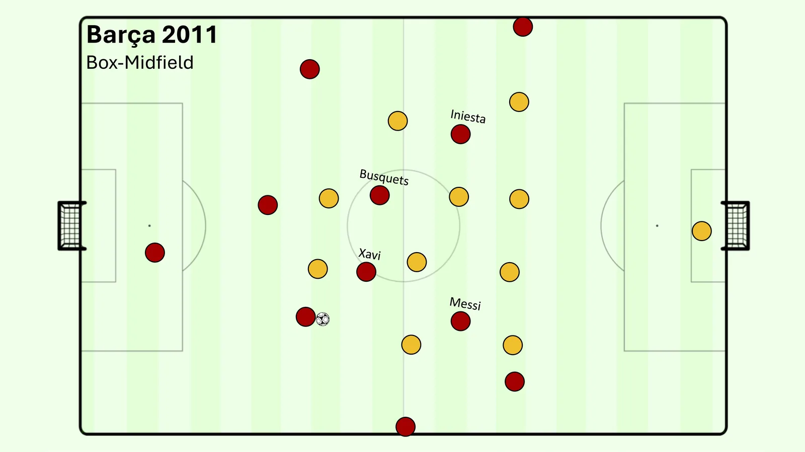
中路不只是一条窄带；它是球场上的一个位置，在那里，朝球门的推进方向相当直接、笔直。斜线性被用来在通常极其封闭的中路里找到那些微小的缝隙。这通过传球、接球和带球发生。粗略简化一下，可以是这样的：
1a) 通过让持球者处于稍稍斜向的位置，撬开防守方的下一条线，从而解锁中路；或
1b) 通过让持球者处于斜向角度，即便防守者未被撬动，也能找到球员之间的小缝隙，从而解锁中路。
2a) 与对手斜向拉开距离，以便能为接球亮身、并以多种朝向中路的选项接球；或
2b) 与对手垂直或水平地拉开距离，以便接球后斜向越过对手进入空间完成推进。
3a) 斜向带球，让你推进线路沿途的选项保持开放，以便继续朝球门的中路推进；或
3b) 水平或垂直带球，让压力线之外的斜向选项保持活跃。
那支巴萨在那层意义上是独一无二的——或许正因如此，它在我们的集体记忆中保有如此持久的统治地位——因为他们能在对手阵型内部控制球和比赛，并在保持中路的同时化解压力。即便是近年最善于控制比赛、推进球权、摆脱压力的球队，通常也不得不靠走向边路或打身后（或减少控球）来实现这一点。巴萨的中路质量——那些微小的斜向角度和之字形的连接、短传混合着数量惊人的狭小空间与短暂的时间窗口来接手、带球、传球——正是让他们独一无二的原因。由此，斜线性既被用来撕开对手，也被用来摆脱压力、干扰并打乱任何逼抢方案，而实际上并不移出对手的阵型。基本上，"寻找空当"这一概念被推到了荒谬的地步：中路任何一个微小的缝隙都已经是足够的空当。每一脚触球都把球调整了几度，重新打开一条片刻前刚关闭、又被"停顿（pausa）"接连填补的传球线路。
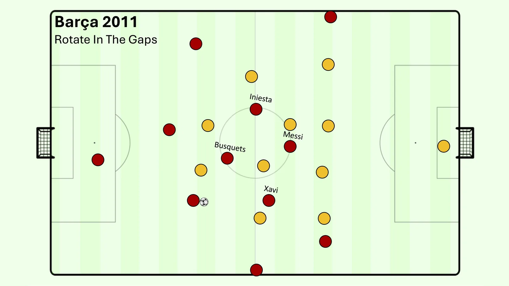
除了这些微小的斜向角度和斜向触球——无论它们意图为何、形式如何——还有他们思维的斜线性，使这种看似不可阻挡的统治得以发生。巴萨会斜向突破，但在短距离内；他们会停止那次斜向动作朝边路的延续，转而在中路内部斜向折回，往往形成"中路—肋部—中路"或类似的组合。再加上从右侧肋部内切的梅西、从左侧肋部内切的伊涅斯塔，除了这支球队纯粹的个人与执教质量之外，一个真正的歌利亚（Goliath）便是从所有这些小大卫（David）中创造出来的——他们不仅斜向地运转着球，还相互围着彼此旋转，以摆脱盯人方案。梅西和伊涅斯塔从相反的肋部内切，制造出一个斜向带球的旋转风车，使任何盯人式逼抢都失去位置；而哈维和布斯克茨主要提供短距离解压的平台，在不需要或无用时无需离开中路。
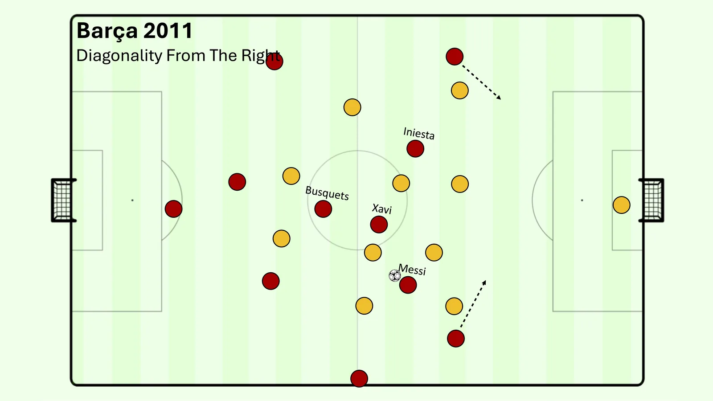
这些中路内部的斜向动作、移动和连接，是保持对核心控制的关键，直到今天依然如此。一旦你失去它——而在现代高紧凑、高强度的中路，这种控制非常脆弱——你就会失去通往球门的最多线路，并被逼着走向外侧、离开或绕到你正试图撬开的防守块身后。此外，中路的每一个斜向动作都会自动打开两条线路——该动作所走路径的延续与中断。在边路，你永远只能二选一。从内到外的球不允许延续——你必须停下它、或带球朝内走；从外到内的球大多只允许延续，即便先有一次迟疑。在中路区域控球，则让下一动作的两条路径作为当前动作的自然发展保持活跃：你可以顺着球的方向走，也可以逆着它走，同时都不离开通往球门的路径。
这就是中路斜线性的真正力量——它在现代足球中并未灭绝，而是变得鲜有可能。肋部通常更像是让边路进入内部的门，而不是让中路反弹回来的墙。中路控制对于有目的的控球比赛是必要的；斜向操控则使它变得充分且有威胁：在打开和填充传球线路时极早而精准的活动与连接，在狭小空间里接球，同时让两条进攻路径保持活跃，在正确的时机和速度上做出传球决定，同时拥有一脚和两脚触球的精准处理，这些是使这种控制得以实现的关键。阿隆索麾下的勒沃库森，或其他使用 4-2 或 3-2 结构的球队，试图在对手阵型之外模拟这种效果——先斜向打出、再斜向打回——但它缺少在对手防守阵型心脏地带进行斜向控制时那种"控制与威胁并存"的一致性。
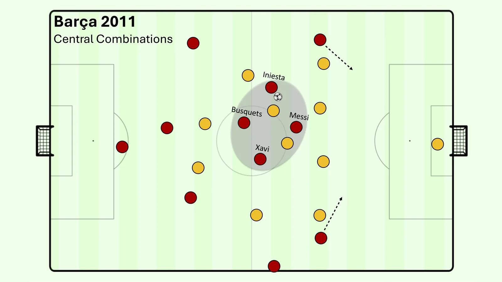
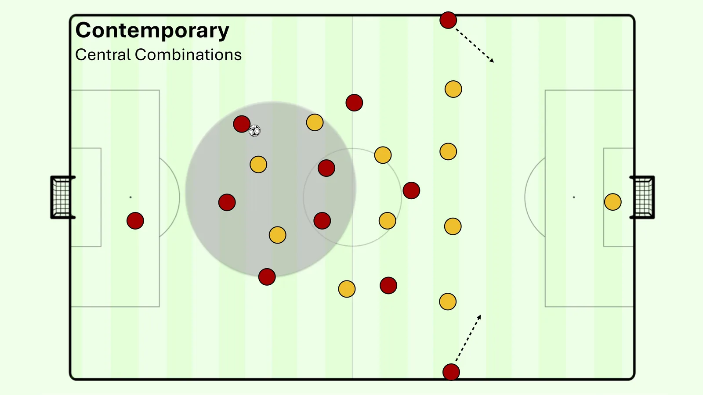
从巴萨的过去与足球的当下斜向离开，让我们接上最后几句话提出的要点——当对中路的控制失败时该怎么办。
斜线性：在边路与从边路
当从及穿过中路控制并推进的意图在应用层面崩溃时，如前所述，球队通常会回到向后倒脚、并且往往再转向边路。如果从中路的尝试和/或倒脚的节奏完成得足够好，这根本不是问题。边路通常是能够实现简单推进的空间：中路会被封死，这不仅打开了边路的传球，也打开了穿过边路的传球，而对手无法早早用人数防守。篮球里有"collapse（向持球人收缩包夹）"的概念——任何看过梅西或亚马尔在进攻转换中穿过空旷中路的画面的人，都知道那是什么样子。
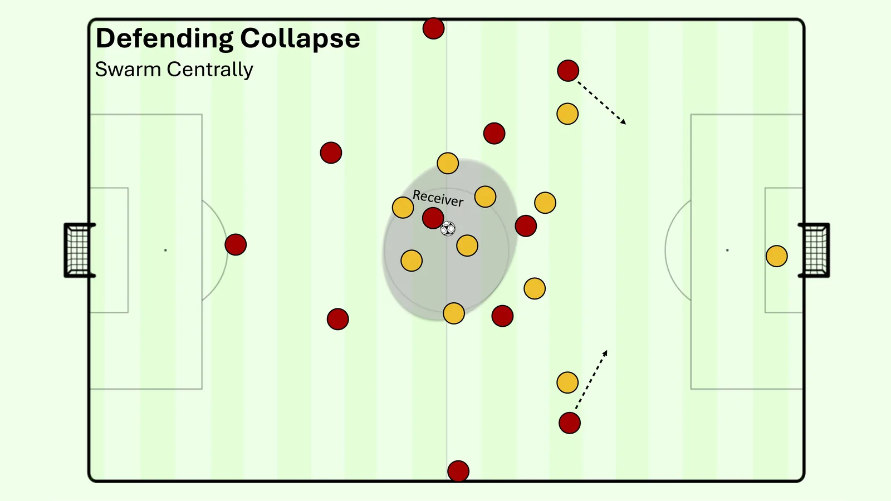
那种"糟了糟了糟了"的紧急状态回追心态，通常对球前方防守者的敏捷和积极程度有奇效。在有序的防守/进攻阶段，这种"收缩"在边路其实比在中路更难形成。为什么？在中路，当完全进入"糟了"时刻，理论上全部十名场上球员都能全速冲向那名单一的中路持球对手，而这个决定的合理性大致介于"还行"到"非常有用"之间，比较现实。而且每名球员到球的距离也都比较现实。如此迅速地积累起来的封堵阴影（cover shadow），也有助于防止任何轻易的脱身。把它与边路可能的收缩相比：远端防线的防守者及时加入这场对抗有多现实？中路球员跑过近球侧防守者来支援，和边路球员在中路防守情境中相比又如何？
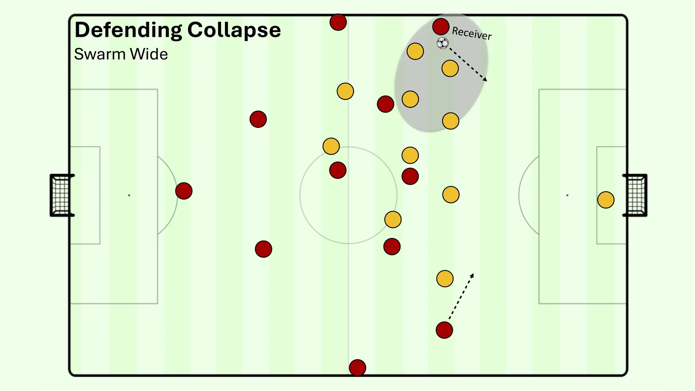
这已经给出了一个正当理由——除了"防止对手反击"之外——在进攻中不要回避边路，而是要在预先设定好正确条件的情况下拥抱边路。来自边路的危险也会打开中路。从边路出发，也有一条相当清晰的"如何斜向朝球门走"的沟通链条——这也部分解释了为何当今足球如此强调宽边锋。如果那边有一名正牌边后卫或翼卫，这种斜线性可能很难实现。显然，反向跑动、撞墙式二过一（1-2）和传中能创造出进入禁区的局面——也可能是非常成功的连接，比如德甲里那对"臭名昭著"的索萨-卡拉伊季奇组合，或科斯蒂奇-法兰克福当年的中锋组合，甚至本赛季英超的埃兰加-伍德。尽管如此，它很少从阵地进攻中制造持续的危险。一名在边路接球的边锋，天生就具有内在的斜向推进价值，而不是那类更线性的边后卫/翼卫球员在边路接球。
除了内切带球的机会——既来自惯用脚相反的"逆足"，也来自纯粹的带球能力——其中还有个人层面的因素。任何不位于最后一线上的位置，大多都会让对手防守者得以保持一个斜向角度来启动逼抢——实际上，让我们就此展开。
小插曲：斜向防守
所以，即便在防守端，斜向站位也有优势。当然，现在冒出来的第一个问题是：如果斜向角度对进攻者有利，这怎么可能成立？这与感知层面有关。如果你能看见对手，而你的斜向位置又是从中路到边路而来的，那么这个斜向位置就是好的——他无法用第一脚触球越过你，而你逼他去的方向也不危险，因为它要么是朝远离球门的方向向后，要么是朝远离球门的方向向侧。把它与前面描述的进攻者的有利斜向位置相比：在那里，接到斜线传球的球员处在对手身后，有机会在没有明确压力路径的情况下推进。这就是为什么在区域盯人体系中，远端横移、并在近球侧边路和中路形成人数优势如此重要；而盯人体系中则保持紧贴任何对手身后的位置，以把他逼向侧向或向后，而非斜向。我们稍后会回到这两个方面。
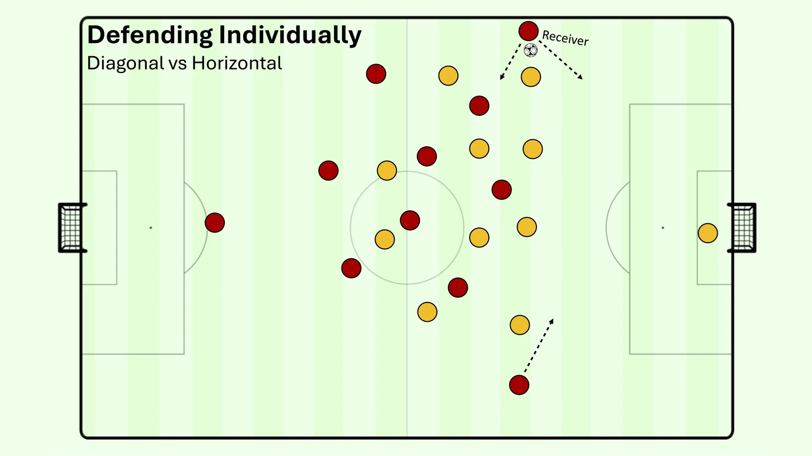
斜向回到边路
在进攻端，边锋位置——从最后一线起步，有机会用假动作/反向跑动来"欲进先退"或"欲退先进（come to go / go to come）"——打乱了对手对近球侧那名球员保持角度的机会。为什么？因为他要么会下沉得更低、迫使球队打开各线之间的空间，要么会自己下沉、打乱后防线的越位线。越位线规则通常迫使防守者与处在最后一线上的边锋保持一条水平的防守线。而且，一名从宽位面朝内侧的边锋，通常能持续看到球、对手和空间，无需过多转身或寻找。从感知上讲，这已经让他在从这个宽位斜向攻击空间上占据优势——也许只是朝内，因而方向性较弱，但在他身体前方仍有两条主要的斜向可供越过对手、威胁着前插到其身前或身后。这已经意味着，无球推进既能斜向、也能朝球门。运用"欲进先退"或"欲退先进"的移动，可以带来在跑动中拉开距离的接球，第一脚触球朝内处理，甚至在前插到最后一线之前或之后接球，同时用在最后一线上的起始位置先提出一个问题、再选择答案。
除了这个能斜向跑入空间、并带着优势接球的位置之外，接球之后——即便在最后一线——还有其他斜向传球或带球的机会。边锋类型的典型做法是内切带球，以带球到达肋部。这次内切带球通常会打开继续带球前进、水平到达中路的机会，同时也打开根据防守决定、在出现的缝隙中斜向传球的机会。这方面的大师显然是梅西：他平行于后防线跑动，躲过每一次拦截，并用直塞球、挑传、撞墙式二过一或第三人配合找到这些缝隙。基本上，这些动作看起来像水平动作，但它们是在诱使对手做出任何类型的（重新）反应，以便斜向撕开。
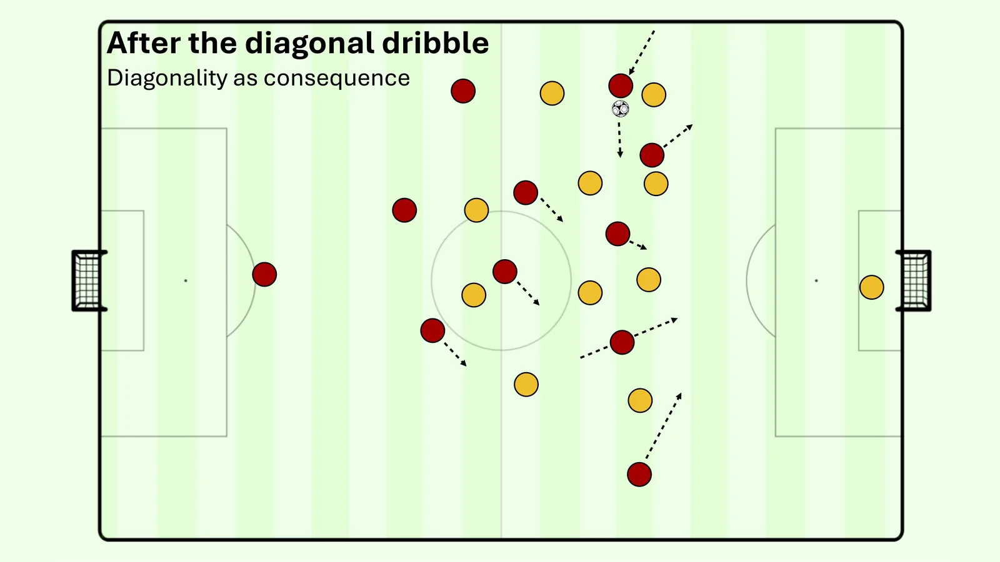
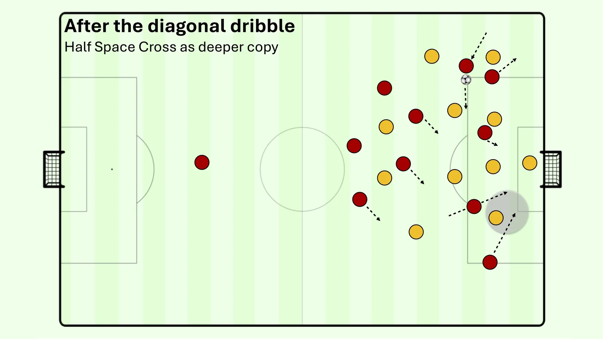
不过，大多数边锋无法在不丢球、或不失去对对手反应的感知的情况下，带球那么久、那么远，这意味着他们可能需要在边路得到更多支援，以进行小范围配合、套边或内切跑动，随后或为了斜向进攻。球队要么缺乏这种质量、要么缺乏这种活动（或缺乏边锋类型），往往就难以打入内侧，并变得过度被动——这也是为什么大多数以三后卫组织的球队，仍然设法在场上、或至少在进攻体系的一侧安排边锋而非翼卫类型的球员。RB（红牛）足球理念在进攻端面临的部分问题，就是各队封锁中路、并学会更好地防守这类活动，而 RB 球队往往又缺乏能利用边路打开空间的纯正边锋——克洛普的利物浦把两全其美融为一体（马内、萨拉赫、菲尔米诺＋边后卫和中场类型共同促成），这不仅带来了他们的成功，也带来了他们的灵活性与对混乱的掌控，即便他们（在某种程度上）依然可预测。
此外，从边路出发的斜线性还有两个不那么明显的益处。不仅是边路球员相对于对方边后卫拥有感知优势；很多时候，对方的中路球员也不得不朝边路的球看去，从而有在自身盲侧为对方远端球员打开通往球门的缝隙的危险。瓜迪奥拉的肋部传中正是利用了这一点——把对手吸引到边路，谨慎推进，找到一个好的角度和长度的回传来设置肋部传中，诱使后防线在先前横移之后前压，然后用拥有斜向朝球门角度、在远门柱区域形成人数优势的球员完成终结。如果由于边路压力更大而做不到这一点，那么关键就在于打身后的质量、然后朝球门（更像一次 L 形进攻而非斜线进攻），或者向内传球、斜向转向球门——而这往往既不是一个简单的转身，也不是在无压力下的转身。不过，即使只是从边路到近端肋部口袋接球后的一次水平转身，也能创造出一次非常斜线的进攻、或至少有这种感觉。这就是从边路进攻的第二个不那么明显的益处：由于球门位于中路，以及防守者应对从边路到中路来球时通常并非直线的调整动作，一名从外到内活动的边锋的水平传球和带球本身就已经带有一种潜在的斜线性。数据分析表明，从斜向带球中打出的射门，其预期进球（xG）值高于从相同距离、但角度更偏的位置打出的射门，因为门将必须覆盖更大的球门区域。
这一效应在肋部甚至更强。
那片甜美、甜美的肋部地带
（本节复制并改写自肋部文章中的原始章节。）
把肋部加入中路和边路之间，会带来对比赛战略与战术特性的不同视角：其中一方面是视野（fields of view）。在中路位置，当两队在球门前对峙时，双方的视野都是垂直的，像两个正前方的圆锥。而对于肋部位置来说，视野不是垂直的，而是斜向铺向球门的。肋部球员拥有与中路球员同样多的选项，却不必转身背对中路、把球打到边路，而是在传球时保持一个斜向的、面向球门的视野。肋部球员保留了所有中路选项，同时让身体保持对球场开放，消除了困扰纯边锋的那种别扭的半转身。"逆足"或内切型球员尤其受益：那些高要求的动作（带球、直塞、射门）现在落到他们偏好的脚上，而那些容易的铺垫触球（接球、撞墙、做球）留在较弱的一侧。
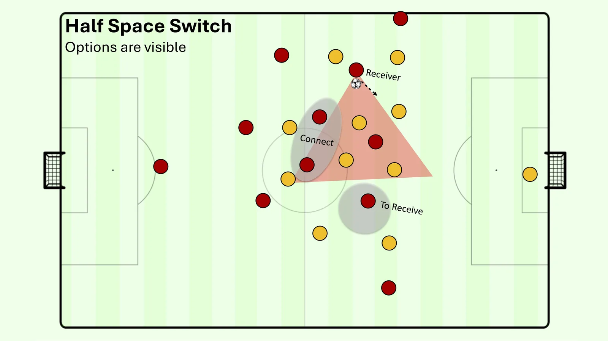
这一技术层面的因素与球员的视野强烈互动，因为视觉场由中央视觉（foveal vision）和周边视觉（peripheral vision）组成。与中央视觉——眼睛的视线精确对准一个目标物体、以发挥最大中央视力——不同，周边视觉在一个固定注视点之外提供粗略、模糊、扭曲的视觉印象。原则上，所涉物体是被周边视觉"看到"的。视场在水平方向上双眼（binocular）展开约 180–200°，垂直方向约 130°。只有大约 2–3° 的中央视觉是高敏锐度的。中路密集的往来交通获得高敏锐度的注视；其余一切都被周边视觉监控着，以寻找威胁或机会。中路通常是球场最密集的部分，可能的动作由周边视觉处理更不理想、但通常更容易完成的动作。在肋部，球员的中央视觉固定于首要危险区——球门、点球点、倒三角回传通道——而周边视觉扫过较不关键的区域。很少的视觉带宽被浪费在肋部后方与边线之间的死空间上；只有当肋部接球者为接到来自边路的传球而把身体朝侧向封闭时，他才必须转身面向球门。
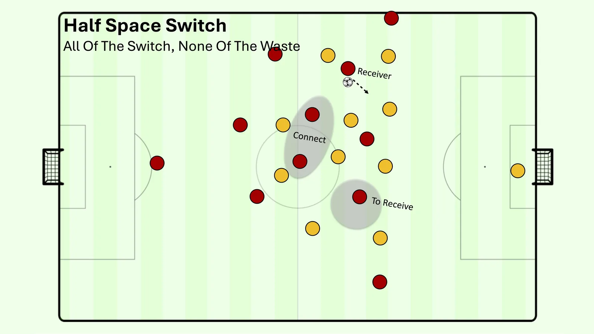
此外，如我们所知、尤其在上述情境中，视野可以通过移动眼部肌肉显著扩大（通过眼跳增强视野范围，以及常用的“肩部观察（shoulder glance）”）。扫视场（glance field）指一个人站立不动、不移动双脚就能把握的区域。借助这些微眼跳的扫视和习惯性的肩部检查，一次快速的眼动可将水平覆盖扩展到约 270°，而一次颈部和躯干扭转则完成 360° 的扫描。
但每一个额外的动作都要耗费毫秒——而肋部在球场上最危险的通道里把这些转动降到最低。对球门的视野和肋部的站位共同创造出一种特殊效果。如果我们想象一名球员能从球场中央有效向前看最多 50 米（毕竟球场总有尽头），把它滑移到肋部，让他能把注意力聚焦在球门或球门附近的空间上，那么同样的这一瞥现在还能捕捉到额外的横向纵深，在没有任何额外身体动作的情况下，成倍地增加可操作的传球线路。
再次运用我们的想象：更多的感知空间意味着更多——且价值更高——的选项。更好的感知 → 更清晰的决定 → 一记动作同时刺穿两道防线（横向和纵向）的能力。进攻得以保持节奏和方向，而无需提高原始执行速度。为什么、如何做到？如果一名球员从肋部朝球门斜向看去（或从球门附近或边路的空间看去），他会看到多得多的空间，因此在理论上不仅拥有更多选项，也有显著更多可操作的空间，这反过来又让这些动作的成功率或价值提高。这将带来更好的感知，进而带来更好的决策，进而带来同时撕开两道防线（横向与纵向）、保持进攻动态、并提高进攻速度——而无需提高执行本身速度的机会。
与此同时，他没看到的空间量也更小。由此，暴露于意外的程度也降低。因为球员身处肋部，并且（通常）拥有朝球门或空旷场地的斜向视野，他与边线的距离更短、且背对边线。因此，他从身后被压迫、或陷入巨大压力的危险很小。占据肋部，只把身后肩侧到边线的那段距离留作支援防守者能加入的空间，从而切断了他在动作发起时可能被压迫的角度。防守者必须在从中路冲来（冒着被轻易向外突破、且对方仍在推进的风险）和从边路冲来（例如冒着在第三人配合后被撞墙打向内侧的风险）之间选择。因此，持球者既享有更多选项，又面临更少的暴露。《Coaches' Voice》指出，正是这个甜点位置，使顶级组织者——凯文·德布劳内、马丁·厄德高、贾马尔·穆西亚拉——游弋到肋部，而不是贴着边线。
斜线传球的覆盖范围，远比平庸的垂直性更能对抗对手的移动。这是因为球能走得更远、更快，加之球到达目的地时动态更稳定这一性质。一次斜线球比一次一脚出球的垂直传球走得更远、更快，却仍落在一名面向前方的队友脚下——接球时稳定，到达时动态。短距离的人数优势（overload）比在边线附近出现得更早，长距离转移感觉风险更小：多出的距离来自角度，而非距离本身。这也让斜向传球比赛拥有更大的覆盖范围——短距离人数优势比在边线上出现得更快，朝球门跳跃的距离更短，而传球实际上变得更长却不像通常的长传那样变得更冒险。
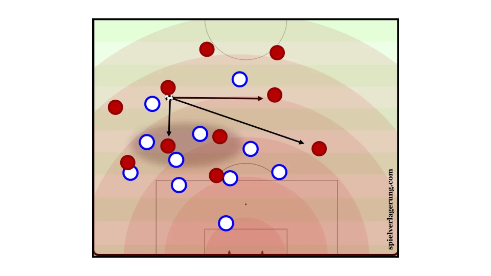
此外，肋部离边线没有近到能被用来对付球员本人（这常常发生在边锋身上）。因此，肋部是"我有足够空间"与"我看不到的东西反正不重要"之间的理想交集。当然，这不应被字面理解或过度看重。它只是澄清理想情境下的基本理论事项，而这在比赛中未必总会出现。因此，必须根据具体情境来考虑和评估这些方面；面对某些球队，正如前文所述，边路可能是最好的进攻手段。
与其发明新的区域来进一步细化我们能在训练和比赛中使用的工具，不如更多地聚焦于填充球场任何区域——或者说空间——的动作。
斜线性在带球中
在继续之前，我们先澄清一点：空间只是球场上位置的结果。空间是球员之间的距离，球员及其任务才是起点。前面关于不同区域的所有章节，只是运用空间的一个工具，而空间本身是位置和比赛规则的结果。我们应始终警惕，衡量标准本身变成了目标。
空间只有在作为达成目标的手段时才相关：进球（或阻止进球）。要进球，通常需要推进。持球时，你控制球，并试图穿过空间推进；无球时，你控制空间，并试图通过夺回球权推进。为了推进，你要么保住球，要么把球送向队友。自然，正如儿童游戏中可见的，人们起初倾向于保住球。这有两个可能原因：把球移动半米比移动二十米更容易，以及看清你周围的空间比看清远处空间更容易。也许对我们来说，先解释带球也更容易，所以它排在传球之前。
带球时，斜线性是一个被低估的方面。显然，本文在讨论边锋和边路区域时已经提到了带球的斜线性。斜向防守使防守者能跟上沿边线的跑动、并防止内切。然而，当你斜向带球时，你会在起始情境中面对不同的场景：
- 正面在前；
- 正面在后；
- 侧向（朝边线）；
- 斜向。
对于所有这些都是无穷无尽的细节，如球员能力、进攻或防守支援、动作速度、接球时与对手的距离……但以上是四种最普遍的场景。还有其他选项（例如从边线侧向），在同一框架内也是清晰的区分，但实际是冗余的，因为其原则已被这四种情境涵盖。
很久以前，在 Spielverlagerung 的德语版上，曾有一项区分：通过有球操控还是无球操控来击败对手，以及通过有球操控还是无球操控来攻击空间。布斯克茨显然不像恩戈洛·坎特或卢卡·莫德里奇那样攻击空间，但两人都成功地带球，且以不同于罗纳尔迪尼奥和内马尔（他们用有球操控击败对手）、也不同于梅西和罗本（他们用有球操控攻击空间）的方式成功。虽然这个话题需要自己的理论论述，但其背后的推理是要区分用球绕开、或至少远离对手的不同类型。某种意义上，你始终想创造的是一个斜向优势，或者说，一个优于对手的斜向角度。
这是什么意思？如果你的盯防者正面在你身前，你想能够越过他朝球门——意味着你将斜向走向他的一侧。你使用的通常是：他脚下的重心、你的速度优势，以及仅仅让他髋部失去居中。如果防守者保持正面并后撤，那么传球迟早应该打开，或者至少通过朝他逼进已经取得了推进。如果防守者正面向前压迫，那么一次沉肩和正确的斜向带球就能让进攻者越过他。
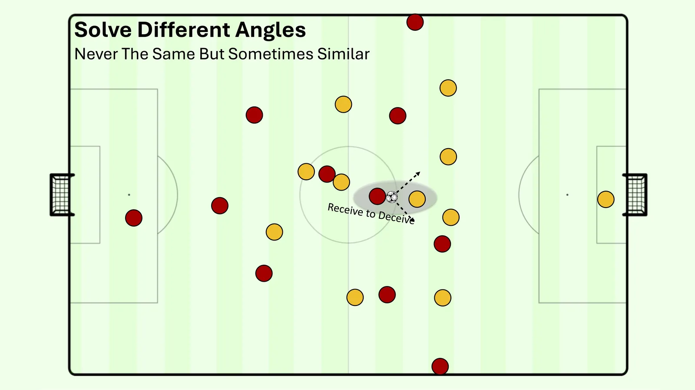
如果防守者正面在你身后，那么这场追击必须变成一次掩护（screen）——要么利用传球的方向和速度，把球斜向挑过对手并加速从他的肩侧超过，要么在远离他的方向做一次斜向触球，随后再根据这次追击内切。要么用身体和手臂（想想卢卡库），要么用小幅加速（想想科曼），来创造所需的分离。
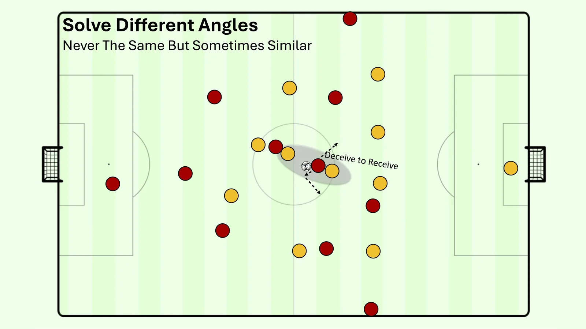
在侧向压迫下，多半在于把第一脚触球处理在压迫者的身前或身后。这可以是在静止状态下（通常由停球创造）斜向爆炸性地触球入空当，也可以是用一只脚甚至两只脚快速两脚触球（想想 C 罗的磕球）。在决策层面，你通常试图让"交通"反转——欺骗动作朝交通（压迫者＋其掩护），真正意图的动作入空当。某种意义上，可以说这是"以欺骗换取接球"或"以接球进行欺骗"（作为给球员的启发式口诀）。
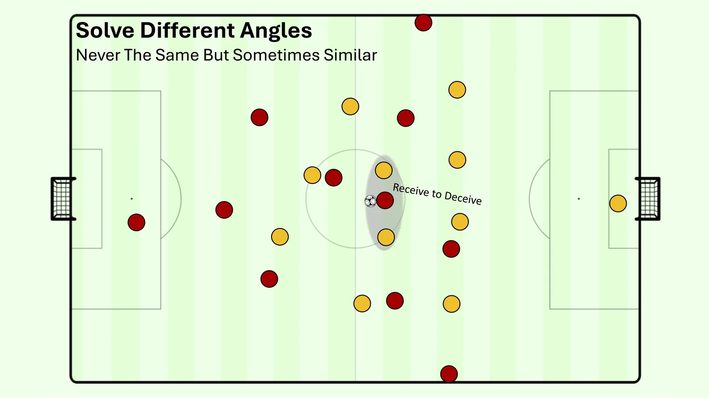
最后一种情境是防守者与进攻者已经斜向相对。某种意义上这是最"对等"的情境，但归根结底与正面面对对手相当类似。你会试图越过他的某一侧肩膀，明显的差别在于有一侧肩膀是你偏好的，而且由于人体解剖结构，两侧肩膀都会得到略微更清晰的保护。与正面位置相比，斜向位置能让人更快地冲进你让出的空间，并更早地阻止你想封闭的空间被侵入。这种站姿在足球中教授得最多，尤其是在区域盯人布置中。作为进攻者，重点在于利用防守者的"敞开之门"——如果对手站位完美，他通常会牺牲一点起步时的积极性。以正确的球速逼进，会每次都改变局面，对手的反应成为一场持续的舞蹈，要做出正确的执行以维持完美的局面。多迈一步就打开一个空间或失去优势；晚迈一步就失去向下的追赶；早迈一步就失去内切的停球。
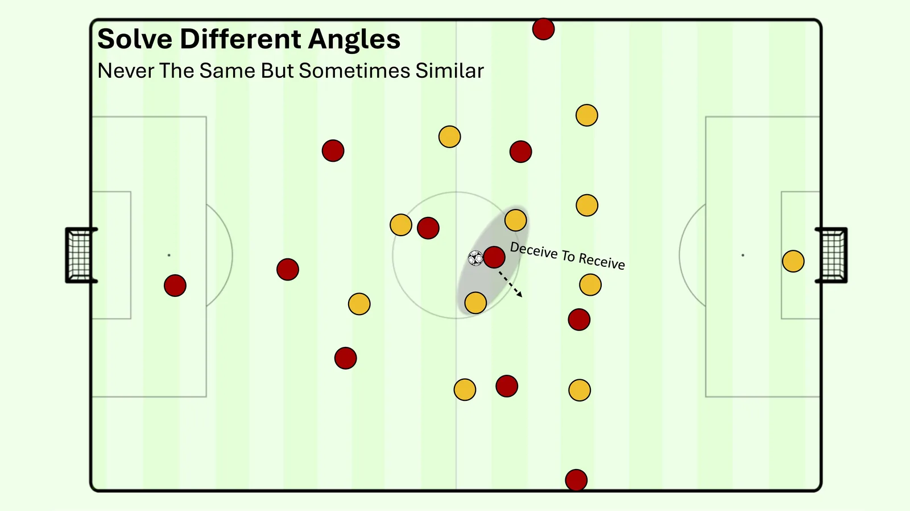
正如 Martin Rafelt 的进攻研讨课中所讲，其假设是：在一对一情境中，进攻球员掌握更多自由度，代价是持有球而损失毫秒。有一些普适的锚点，决定了在这些毫秒中失去或获得多少，以利用这些自由度：
- 球场地理很重要：位置决定了威胁和防守行为（与球门的距离），也决定了你拥有的角度（如前文关于不同区域的段落所述）；
- 位置决定第一脚触球，第一脚触球设定角度；
- 加速与减速的机会决定时机和方向；
- 节奏及其"直径性（diamentrality）"决定速度；
- 卖出一个谎言，伪装和欺骗，以打开推进的空间。
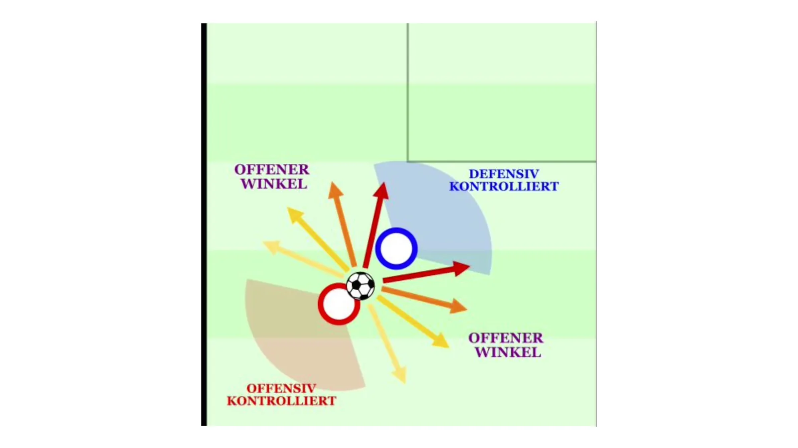
斜线性在传球中
斜线传球是进攻比赛的主要加速器，而带球大多是其主要优势的创造者。前文已经解释过，它们试图结合两全其美——水平传球的安全性配以垂直传球的推进性。它们之所以加速，是因为从两种意义上切开了防线，从而迫使防守方做旋转式移动，并因此为接球者创造时间优势。可以像之前带球那样做一个类似的分类。简单说，一次传球可以要么是由外向内的斜线，要么是由内向外的斜线。如果动作的终点在肋部之内，其价值就会提升；如果动作的起点在肋部和中路之内，它又会再次提升。简言之：从中路到边路的传球，比从肋部到肋部的传球更不危险、也更少有用——而这两者都属于由内向外。显然，目标比起点更重要，但传球的终点会带着其起点内在价值的一部分。
为什么由内向外与由外向内之间会有这样的差别？同样，由于本文的结构，我们之前已提到过。一次由外向内的斜线传球显然优于一次外-外传球，也可以说优于一次内-内（即垂直）传球；但彼此相比，由外向内传球带有"必须向内转身"这一额外约束和挑战。良好的早期身体姿态有助于在半转身状态下就接球，但尤其在短距离上，做到这一点比由内向外传球更不容易、更不常见——由内向外通常意味着离球门更远，但接球是朝球门的。
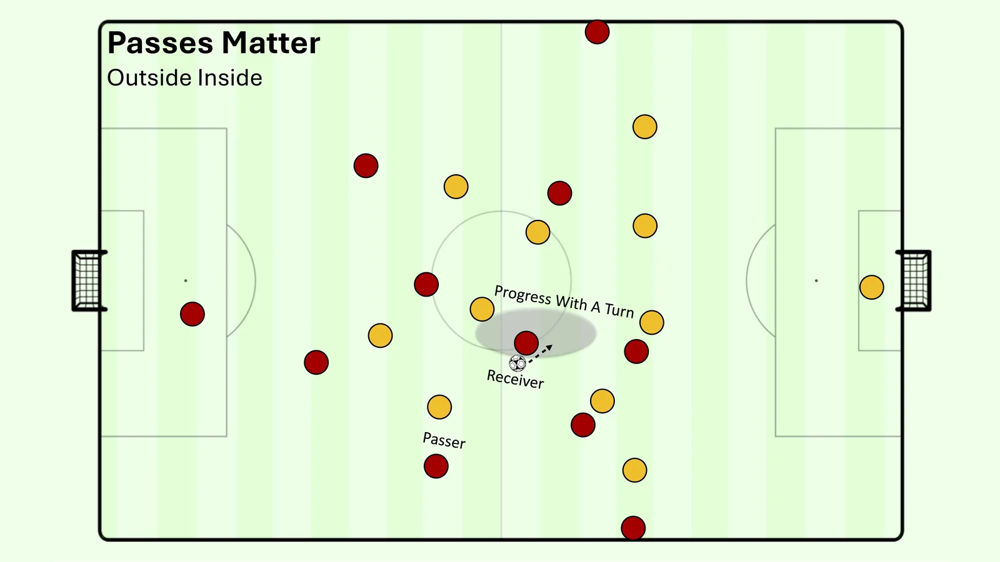
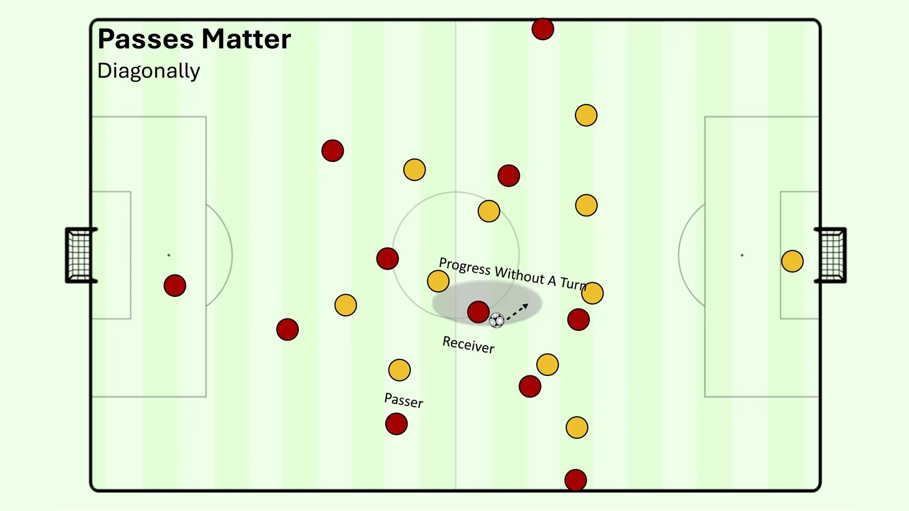
理想情况下，正如我们对区域和带球所做的那样，我们再把分类稍微扩展一点。保留"传球必须是斜线"这一大前提，但增加"内-内"这一类，用于从内侧来、且留在内侧的传球——就像 2011 年巴萨那样，两侧的边路区域都不被激活。把这一第三层作为执教工具加入，或许有助于更强地启动对这些动作的感知，使阵型内部带有斜向角度的配合、以实现斜向的传球与接球。
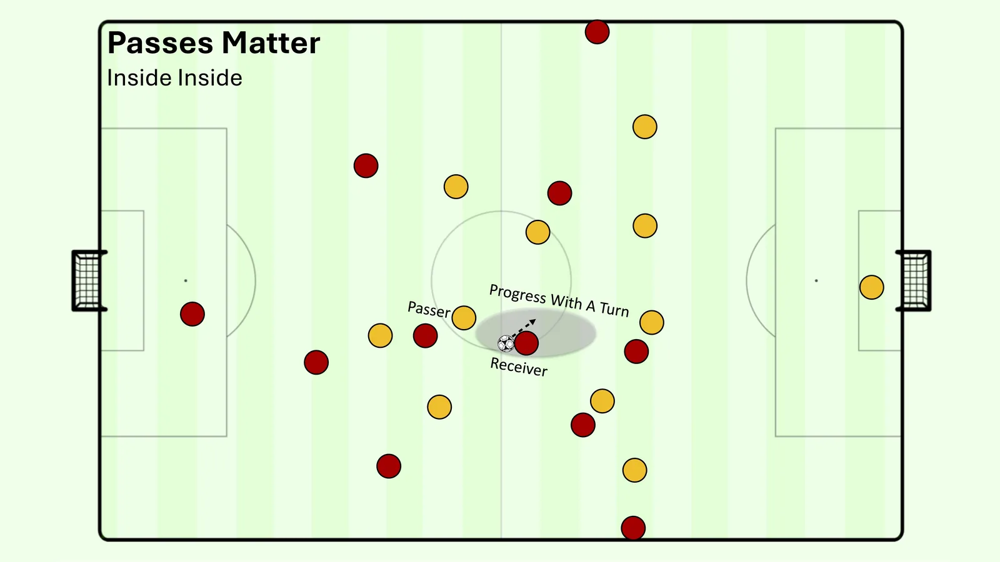
显然，斜线传球并不总能撕开对手的两道防线（横向和纵向）。而且，在当代足球战术中，各条线正在消亡，至少在高位逼抢中是这样——如果你打盯人，或用高度交错的逼抢体系（说的就是你，3-2-3-2 和 4-D-2）——那么这些线至少可以说是模糊的。如果斜线传球不能撕开两道防线，至少也得撕开一道，或者让接球者撕开另一道——如果你想推进的话。最后一类，外-外，主要是脱身，或是向一名已经拥有优势的球员（边锋对边后卫，或其他罕见的位置错配，用 Seirul·lo 的说法：质量优势 Qualitative Superiority）进行的简单推进。
除了斜线传球的空间层面，还有一个时间层面。本质上，来自慢速倒脚的斜线传球会加速比赛，而来自快速倒脚的斜线传球会减速比赛——只要它是向前的（而非斜向回传，我们下面马上解释），两者都是积极的。为什么会这样？在这一情境下，与其说是纯理论，不如说更关乎当代足球。如果你被迫打快，那么一次斜线传球通常会打穿逼抢、并为接球者带来一个有空当的局面。如果你被迫打慢、然后找到了斜向的推进，你自然会加速比赛，而希望你的质量能跟上随后因防守收缩而产生的节奏。
那么，一次向后的斜线传球（而非上述向前的那些）累积起来是什么呢？与水平传球相比，你可能也会失去防守转换时的安全球员，但你确实获得了朝前看、并能选择两条线路的视觉和运动优势——继续向后走（同时把对手引出、打开空间，并考验他们的协调）以走得更远，或在恰当时机中断这条路径、向前走。尽管如此，它与向前的斜线传球不同，因为你并没有叠加垂直与水平传球的双重优势。
斜线性在跑动中
推进的第三种方式，是间接地通过跑动本身。一次绕到后防线身后、朝球门斜向的跑动，如果时机完美，或许比用带球完成的同样动作更有价值——即使它不那么精彩、对个人能力的要求也更低，可以说是如此。一次时机恰当的斜向身后跑动，可以胜过一次花哨的带球：它行进得更快（没有球带来的摩擦），不需要初始的对抗，并缩短了射门前被回追抢断的时间窗。基本上，因为球在起始阶段不参与，球员会更快，对手在射门前追上的机会更小。
因此，带着球越过一个对手，与不带球越过一个对手并没有太大区别，只是你对队友的依赖程度不同。如果你能在最狭窄的空间里、独自面对最好的防守者完成带球，你就能制造差异。如果你拥有尤塞恩·博尔特的速度、外加奥利·沃特金斯那种对身后跑动的感觉（那你就是埃尔林·哈兰德），你至少仍依赖有人把球传给你。尽管如此，能无球推进也是一种特殊的能力，而这一点在执教中有时被低估，尤其是在较低级别和青少年层面。
斜线性之所以重要，是因为它同时扰动防线上的两个轴。与传球类似，一次斜向跑动通常同时在横向和纵向上扰动对手。防守一名在你身前积极移动、但只是横向移动的球员，通常只需跟上他的移动并让他留在你的视野里。如果那名球员已在你视野中并试图垂直进攻，跑动是朝你而来的——视距离而定，你同样可以只是跟上移动、并保持足够大的距离，从而化解这次跑动的意图，而不必过晚转身。
只有当球员处于你的侧向时，一次垂直跑动才可能成为挑战——前提是你没有处于半转身姿态；而通常这只发生在最后一线，因为越位线迫使防守者允许对手有一个水平的起点来做垂直跑动。horizontal 的移动在它与轮转相连、或在防守方未做好准备时离开所分配防守者的区域时，更为危险。
噩梦般的情境，是进攻者从视野的周边或盲侧宽处启动，然后强烈地斜向切入。防守者必须同时转身/扫视、追踪纵深，并感知越位线。斜向跑动恰恰如此：它们在要求个人沟通和决策能力的同时，在同一时刻提出两个位置上的问题。斜线性不同于横向性和垂直性，因为它同时向你提出两个问题，并且几乎总会迫使功能发生改变——无论在人盯人还是区域防守中都是如此。
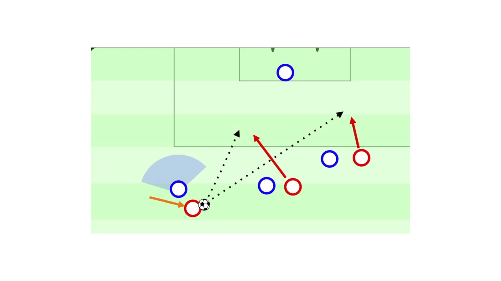
防守者偏好二元线索：球或人，内或外。斜向移动迫使他们决定：是向内跟防你（打开边路），还是把你交接出去（冒着沟通失误的风险）。此外，一名斜向的进攻者会显得比预测中"更早到达"。人类大脑会系统性地误判斜向角度下的碰撞时间（time-to-collision）；一个从 30–60° 方向跑来的跑动者，会显得比预测中"提前"一步出现，从而降低防守者的拦截时机判断。正因如此，防守者不得不感知更长的传球，并在其视觉焦点之外感知更多。统计分析表明，一次斜向冲刺进入禁区接球比一次垂直冲刺创造更多进球——那么在创造得分机会的阶段，传球和带球又凭什么会不同呢？
即便只谈执行、也即生物力学，斜向移动也有明显优势。为了应对一名斜向跑动者而转动髋部，往往会在后续动作中暴露出防守者的盲侧，同时因为被迫进入"先横向、再后退"的序列（相比直线冲刺会损失速度）而拖慢其应对第一动作的回追速度。变向研究表明，在更高进入速度下、角度越锐利，膝关节外翻（knee-valgus）负荷会骤增；被迫进入横向再枢轴序列的防守者，在 10 米内比直线追赶要多花 0.12–0.18 秒——足以让对手在无压力下射门。按此逻辑，进攻者的一次斜向移动，为他的下一动作（传球、射门或进一步加速）提供了一个天然的弹簧——这就是为什么顶级教练如此热衷于教导防守者绝不让身体姿态保持正面、并持续调整脚下步伐。
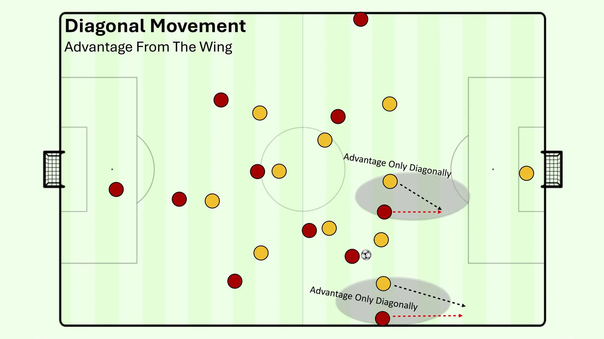
在最近三章中，大多是（进攻）球员动作与（防守）对手所受影响之间的关系。我们有时已经提到它与队友如何互动，但在这方面还有多得多的内容可补充，而这或许是当下足球理论与实践中增长最快的研究领域。
斜线性在连接中
正如控球足球既是一场位置的比赛，它也是一场角度的比赛。很久以前，Spielverlagerung 内部的一个小型研究小组试图从绝对术语转向相对术语。位置变为距离，时刻变为时机，方向变为角度，速度变为速度矢量（velocity）。这看来像是给大脑做不必要的操练、或一场奇怪的思维实验，但其意图是更深入地进入球员之间的互动，而不仅仅是孤立地谈论他们的个人动作——基本上，即便在分析球员或球队的理论层面时，也要回到 11 对 11。
虽然（目前）还没有成品可以展示，但有些方面已在现代足球版图中变得可辨。无论是 Jamie Hamilton 及其伙伴的关系主义（Relationalism）分析工作，还是像小因扎吉的国米及其轮转这样一些引人入胜的战术新事物，它都让眼睛为那些塑造足球未来的、有前景的解决方案做好准备。历史上，1950 年代的巴西足球流派创造了 4-2-4，它源于匈牙利教练 Kürschner 的 WM（3-2-2-3）阵型被斜向倾斜，而这记斜杠最终导向了 1958 年世界杯冠军球队的 4-2-4。叠起两个斜线，你就得到一架阶梯（escadinha）。阿根廷人则在纸面上表达的斜线性或许更少，但由 1940 年代传奇的河床队推广、源自 1917–19 赛季竞技俱乐部夺冠阵容的 La Nuestra，始终强调斜向的分层、前场五人（或者说中路三人）的换位、Gambeta 带球、始终一脚弹传的选项，以及像"Dos y uno（二过一）"这样的执教要点，以创造三角（以及一个 10 号位），并为一种特定的一二配合在带球进攻球员的跑动中提供一个传球和做球的位置。
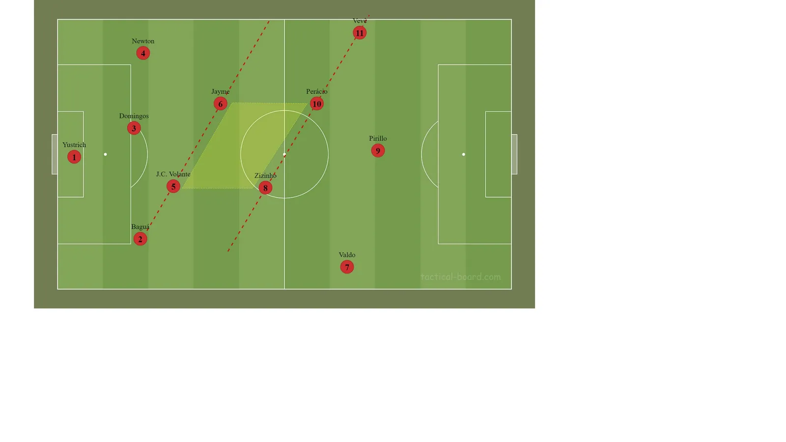
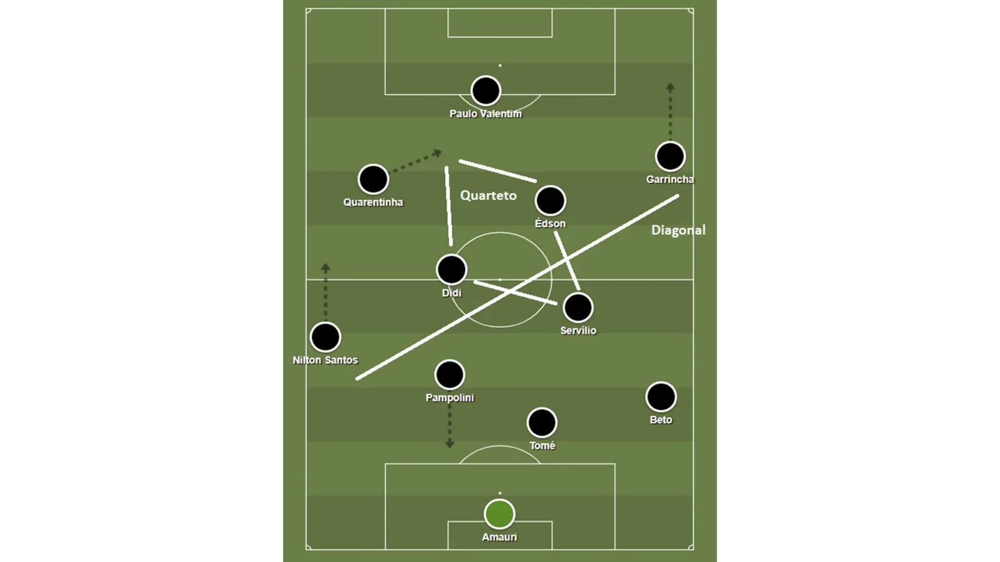
如今，这些概念和连接仍然主要取决于球员。几乎没有哪支瓜迪奥拉的球队再次达到过梅西、伊涅斯塔、哈维和布斯克茨在中路的移动——即便佩普作为教练，很可能已从"世界最佳"提升为"史上最佳"。无论是迪尼兹与弗鲁米嫩塞，还是小因扎吉与国米，他们都试图用自己的足球创造彼此不同、也与瓜迪奥拉理念（这一理念已席卷足球世界）不同的局面，而不必拥有能自行创造这些连接的球员。然而，这三位教练在这些连接中的斜线性是相似的。
一条斜线是最小的关系单元，它已经包含两条战术指令：前进（向前的分量）和横移（横向的分量）——无论是通过传球、带球还是跑动。例如，小因扎吉的国米利用这一点（两次）打入欧冠决赛，而场上没有任何真正的 1v1 好手或边锋——在现代足球的这个级别上，这本身就令人印象深刻。相反，他们使用斜线-斜线的传球连接（例如从翼卫到中场，以引诱，然后打给中锋）和斜线-斜线的跑动连接（翼卫变成一名前插身后的边锋，同时要么中场斜向拉边、要么中卫斜向压上，另一个人始终对这一移动做出反应）。他们连接中的这种斜线性，作为结果而非目标，制造了大量轮转——这往往就是这些轮转在纸面上比在场上更有效的原因（面对盯人时），而小因扎吉或许是击败加斯佩里尼那台来自贝加莫的盯人机器次数最多的教练。
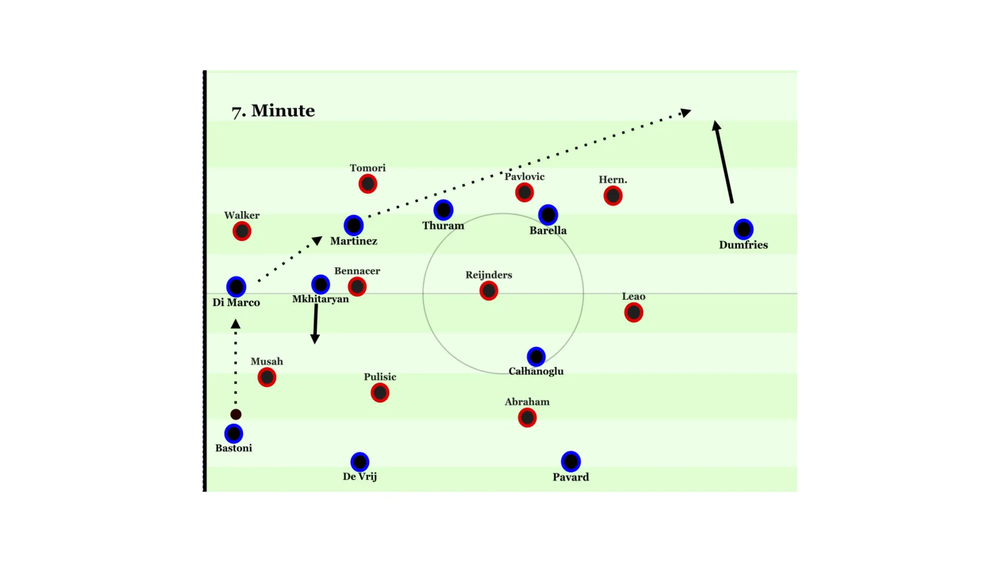
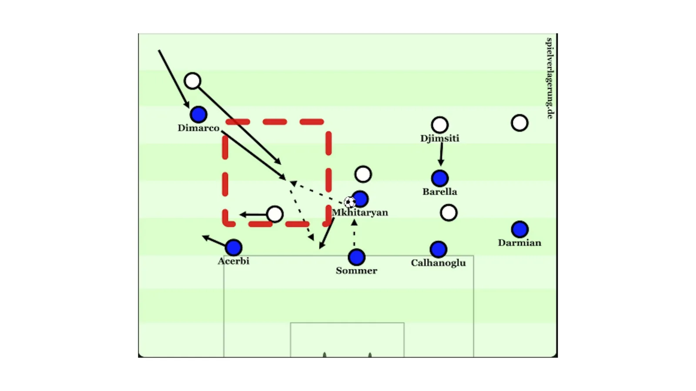
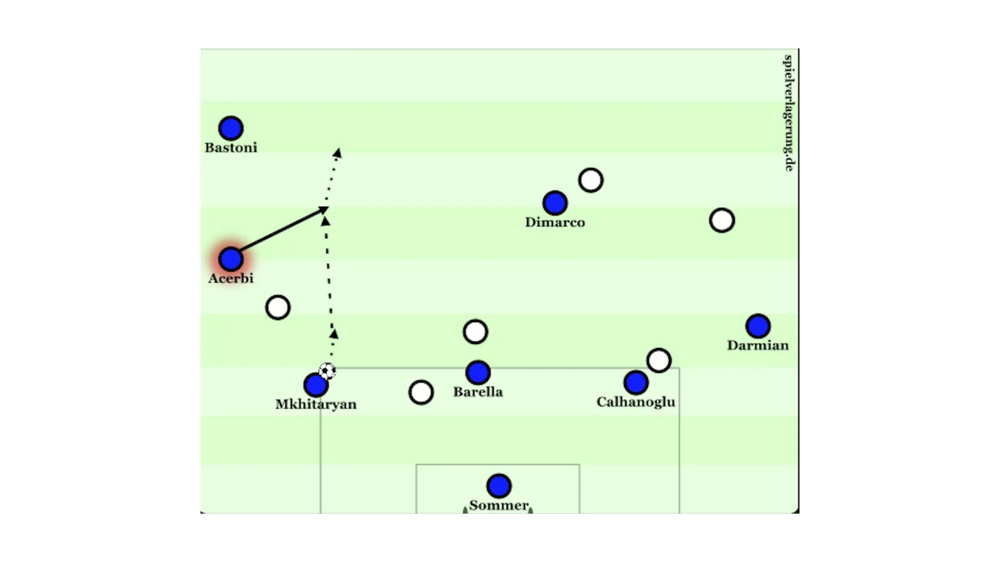
如前所述，此类斜向连接带有空间和时间两个层面——无论对手防线选择哪种类型，这都会给它施加压力。不过，球员仍是起点——所以压力不仅是空间和时间的，也是信息的。斜向连接所赢得的空间更大，按定义，需要防守、阻止或重新夺回的空间也更大。这种认知负担不仅迫使额外的转头，还迫使额外的话语、额外的决定、额外的错误……仅仅因为用的是斜向连接，而非垂直和水平的连接。
进一步发展（执教）斜向连接的工具和概念，无疑是进化中最引人入胜的前景之一。当分析师、教练和球员从绝对的名词转向相对的动词时，比赛的肌理会发生变化。到目前为止，我们只是这一发展的开端。然而，这发展已经开始，因为、也多亏了它被逼着开始。
斜线性对阵区域防守的"版本答案"（Zonal Meta）
几年前，当克洛普还拥有正常数量的牙齿、德甲还是欧洲竞争最激烈的联赛时，中场逼抢（midblock）和各种阵型是所有"老 Spielverlagerung"分析的起点。带一名清道夫的人盯人（德甲在顶级联赛中把它保留得最久，可以说）终于消失了，并遗憾地被几乎所有球队的 4-4-2 所取代。除了球员质量，成功由这套 4-4-2 的紧凑性和强度所定义，其中克洛普的多特蒙德在这两方面遥遥领先。当海因克斯横扫欧洲、瓜迪奥拉到来后不停地在击败那些早已"死掉"的球队，联赛慢慢开始改变和适应。纳格尔斯曼在霍芬海姆的成功完成了其余部分：3-D-3 轻松摧毁了大量这类 4-4-2，无论它们多么努力。从这些被动、区域横移的中场防守出发，红牛和克洛普流派最终适应为一种更好、更高、更强的版本，往往表现为 4-菱形-2 或 3-4-1-2 的变体。弗利克的拜仁，其边锋和边后卫整体高一线的极端进攻，或许是德国对这种打法的最佳演绎。
如今，在英超的引领下，这类足球又在慢慢消亡。原因显然是瓜迪奥拉，以及全球化"抄作业"足球世界里，人们对他概念和方法的理解与推进。不要封闭球周围的空间，就会有一名半转身的自由球员；扑向他，球就会到你身后，要么斜向、要么打身后；过早横移太多，转移就来了；太晚横移，就只能痛苦地绕圈跑；晚一步或慢一点触发，你就出局了；一个人去逼，你也回不来。斜线性已迫使所有这些区域防守块走向被动、失去球场控制。任何针对这类防守的斜向移动，要么触发一次角色交换（边后卫把你交接给中卫、6 号位下沉进通道等），要么触发一次集体后撤。
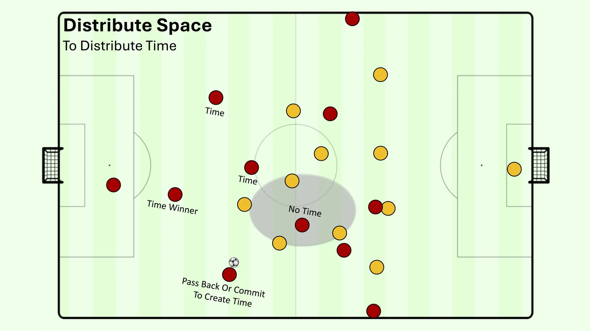
区域防守块建立在正交逻辑之上：防守者横向滑动或垂直后撤，以守护预先分配的通道，在两个笔直的轴上压缩球场。这套逻辑已经离开了比赛（当然，前提是你拥有能攻击纵深和/或内切的宽位球员）。一套新逻辑已经到来。
斜线性对阵盯人防守的"版本答案"（Man To Man Meta）
首先，球队在组织进攻上进步如此之大，以至于来自区域体系的高位逼抢比以往任何时候都需要更多沟通。为什么这很重要？当你高位逼抢、想早而快地逼抢时，你几乎无暇回头看你身后。你依赖队友的协调与合作，但你也依赖于你身后对手缺乏这种协调。
这一点之所以关键，是因为不仅有针对打碎逼抢的移动（主要围绕利用对手阵型内部已有的位置优势、或在阵型外部创造人数优势），有时球员还"不得不"防守一个已经不存在的东西；弗鲁米嫩塞在压力下组织进攻对抗曼城的那段传奇画面，本可以只靠在起始时改变一两个逼抢角度或方向就解决。但这里的关键词是"本可以"——它真的会发生吗？而且显然它没有发生，也是有原因的。
由此，足球变得更加极端：不再是"紧凑性＋强度"的结合，球队如今二选一——而像阿森纳这样的最佳球队则是两极的大师。什么意思？要么球队全力逼抢，大多采用盯人体系，同时试图在这个过程中重新创造紧凑性；要么它接受某些阶段的劣势，在自家禁区前全力紧凑防守，同时试图在这个过程中重新创造强度。
深位防守（deep block）可以说在战略上已被解决、在战术上却未被解决——这讲得通，因为它是薛定谔的深位防守：只要你不给那只猫"休息防守（rest-defend）"，它在（防守上）活着、同时在（进攻上）已死。直到现实坍缩、西蒙尼赢得西甲。高位逼抢对大多数（成功的）高位逼抢球队来说，已演变为一场全盯人的狂欢。
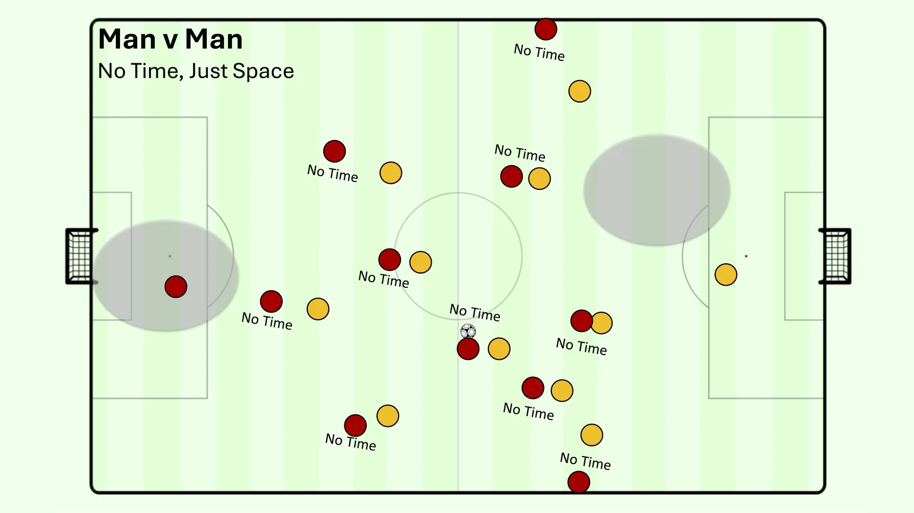
虽然德泽尔比的组织进攻至少提供了推进或使其失稳的选项，但大多数球队在更高层面成功运用它仍有困难。这也不仅关系到球门球，还关系到任何从较低位置发起的进攻组织。感知的协调反而减轻了：当你触发时，你其实不太关心队友，也不太关心触发的那名队友。我们经常谈到，区域盯人和人盯人都只是概念；归根结底，是参照点的层级（hierarchy of reference points）。
以前被动的区域盯人只关注队友，因而关注紧凑性；在萨基流派及其在德国和西班牙的演化把"球"放到思考链条的顶端之前，就是如此。同样的事情也（尽管被大量忽视和缺乏分析地）发生在了人盯人上。那种愚蠢、驴子般追着对手跑的做法已经消失，球占据了顶端位置——只是现在，对队友的感知不如对对手的感知重要了。不再是防守多名对手、因而必须在众多选项中抉择；现在每名球员只防守一名球员，决定又变得清晰起来，即便面对现代的超控球球队/球员。
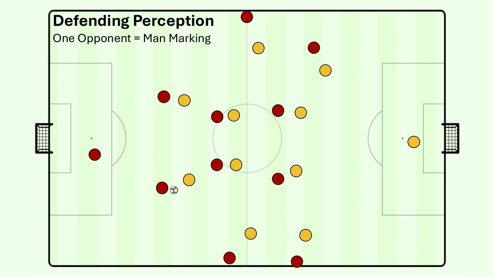
当一个防守体系放弃区域、宣告"这个人归我，下一个归你"时，它把每一次对抗简化为一个单一决定：保持贴身，并复制前锋所做的一切。因此，进攻者的任务就是把这个单一决定的问题再次升级为两个决定的问题——正如我们之前提到的，一次斜向跑动、带球或传球恰好能做到这一点。你是留下还是跟防？无论你选哪个，会发生什么？每一次交接都是一个潜在的沟通故障；像国米这样的精英级"反盯人"球队，把这种不确定性层层叠加地武器化——第一次斜向跑动清空空间，第二次利用它，第三次对收缩做出反应。
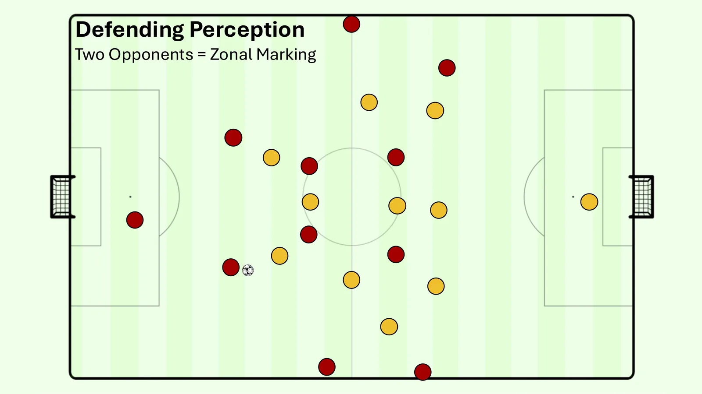
斜线性也将是越过盯人防守版本答案的关键。首先，从个人角度。要摆脱一名盯防者，我们前面讨论过的跑动、传球和带球中的斜线性都很重要。无论世界上哪名防守者，他仍然必须同时关注球和对手，即便通过把其他对手和他自己的队友排除在等式之外、使决定变得更容易。只专注于一名球员，带来了反应性（空间和时间上）和信息缺口的问题。如果你感知到被盯防的球员，你只能针对他现在的位置、或他之后的移动之一进行控制。如果防守者贴得太紧，那么只要进攻者足够斜地远离防守者，无论在第一脚触球之前还是之后，他都会在方向性的速度比拼中落败。如果防守者离得太远，他能针对移动、却不能针对位置进行控制。球会被进攻者稳稳护住；类似于海森堡的不确定性原理，对于（足够好的）进攻者而言，盯人防守中始终存在一条不确定性原理——他们要么可以利用自己与盯防者之间的空间，要么利用盯防者身后的空间。你越是贴近防守其中一个方面，对另一个方面的防守就越弱。当球员在球队层面如此协调时，一种新的防守版本答案就会成为必需。斜线性在那当中也必然会成为关键。
斜线掷界外球：斜线性对阵转换的"版本答案"（Transition Meta）
除了进攻与防守之间那场永恒的较量之外，转换中（两个方向上）也存在斜线性。在控球权易手的这场微型战争中，两个最清晰、或至少最广为人知的概念，大概是从远端斜向下沉（以覆盖中路、阻止对方反击朝球门推进）和斜向脱身（以摆脱反抢、打断对手夺回球权的势头，把这变成自己反击的一把双刃剑）。
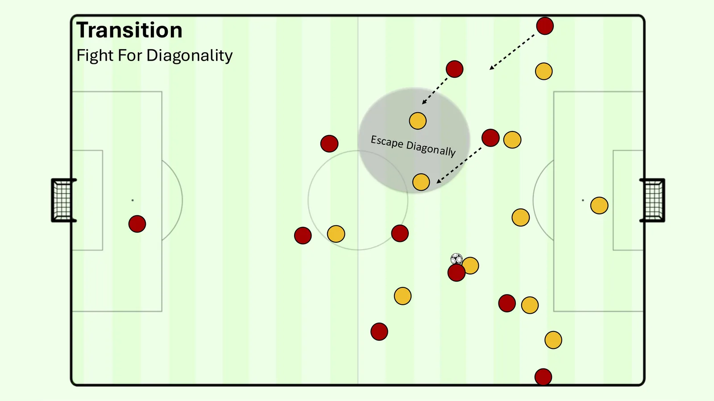
反抢（counterpress）和反击本身也适合斜线性。一次斜向而来的反抢，通常会迫使对手深入（进入——但愿是——人手不足的区域）或向外（到边线）；而一次斜向发起、并斜向继续的反击，通常会保留更多选项，以便从中路、穿过中路或穿过边路完成终结。视野保持完整以攻击球门，而最后一次斜向打身后往往能带来一次"刚刚快够"的终结。穆里尼奥时期皇马的一些反击，看起来就像一次斜向脱身、一次传入反抢身后的斜线球，然后是全力压上，接着是一次斜线-斜线的终结，往往在找到一名正好在最后一线、用一次斜向的第一脚触球或传球越过防守的球员后，横传给队友完成轻松推射。
对抗斜线性：预防与防守（否则就死）
显然，反过来也成立：要进一步把斜线性作为一个概念推进，就必须提出什么会挑战并试图破解它。斜线性不止是一个传球角度，它是一种结构性逻辑。它们打破横向的对称和纵向的紧凑，从而同时使盯人防守和区域覆盖失去方向。某种意义上，它们要么把斜线性武器化，用来对付单个球员的自然移动，要么用来对付一个单位的自然移动。为了找到限制斜线性所构成危险的解决方案，要么是既有概念通过改进和精密的方案，在最高层面应对它；要么是演化出新的概念来对抗它。
为了在保持当前做法的同时顺应进化的潮流，球队必须能够在自己的防守结构中始终找到斜线性——半转身位置、小幅步伐加速、预先定向的身体姿态，甚至斜向的执教与沟通线路，或许还有斜向横移的补充。几何是中立的，但智慧不是。盲侧的接球窗口必须极小，每名球员的任务——无论是从传球者一侧来、还是朝接球者一侧去——都必须清晰。斜线性还会额外迫使区域盯人球队拥有更多层次，以切断斜向连接。一切平的东西都脆弱；一切交错的东西才有机会存活。如果你切不断第一次斜线，那至少冻结接球者、并对他施压，因为你在应对后续动作时是交错站位的。此外，像斜向起跳加上身后横移这样的概念——像一次 L 形移动，而非通常的直线起跳和三角或 V 形——可能有助于应对它。远端起跳是新的近端起跳。
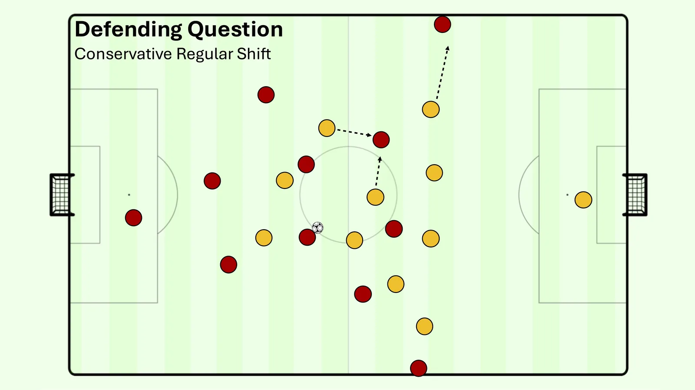
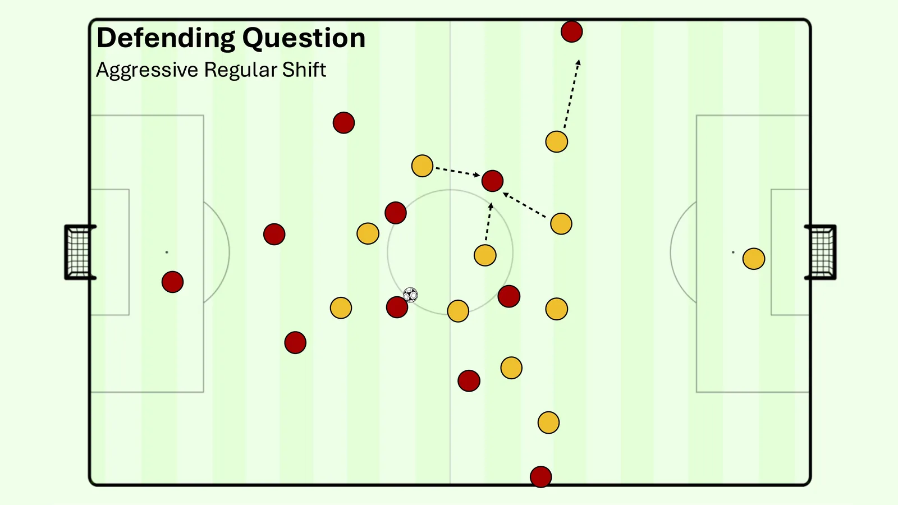
"分层（layers）防守而非线性（lines）防守"，可能是这种适应过程中的一个关键概念。图赫尔在欧冠决赛对阵曼城时的混合盯人方案，就是朝这些有智慧的（去）形态迈出的一小步。
对于盯人方案，有机会通过围绕接球者和传球者的盯防者进行轮转来演化——从那里覆盖，正好在偏好的斜线方向上增加额外层次，并迫使它们要么丢球、要么至少转向横向、变回防守者更传统的起跳，同时让压力与门将保持高度活跃和同步。盯人为了清晰而制造清晰，但如果清晰本身变成目标，它也就成了猎物。在盯人方案中更多地利用覆盖阴影，并在可能时加入小的交接（handover/handoff）窗口，是对既有方案的另一种演化。正如区域盯人的 L 形横移更新：不要害怕逆着斜线轮转。
归根结底，新概念、甚至新范式都将源于一个简单的事实：防守理念是否准备好向斜线逻辑、或至少一种"反斜线"逻辑演化？自然习惯和取舍将改变多少，以适应并吸收斜线性及其解药？
问题：对角裁判制（Diagonal system of control）
在结束本文之前，还有一个尽可能简短的"思考的食粮"。你知道就连裁判也有一个清晰的主流体系——一个对角体系吗？#Positioning_and_responsibilities) 显然，每个看球的人都见过、也都知道，可你曾经多自觉地思考过它？有统计显示，主裁和助理裁判离教练席越近，吹哨、出示黄牌或红牌的概率就越高。有多少教练可能想过利用这一点来让对方吃牌，或调整自己的进攻、以及偏好找哪一侧的边锋？
总结：斜线性作为一种生活方式
为了给这场满是线路和距离的巡回马戏收尾，我们想指出：写一个几何方向——而且本可以在这篇文章里被无限细分、或分成 12 类——是多么有趣。为一根角度写颂歌，是令人愉悦的荒诞，即便以我们古怪的标准看也是如此。尽管如此，英语和德语版 Spielverlagerung 的理论文章史一直是积极的，并时常靠那种偶尔一见的"傻气"而茁壮成长；正如其中一些理念后来的演化所示，这并非徒劳。抗压迫（pressing resistance）、休整进攻（rest-attacks）、各种"伪"的角色（包括门将）……每一个都始于一个脚注，并成熟为教科书式的常备内容。有时，以怪诞玩笑开篇的东西，会成熟为战术概念。斜线性仍是这套生态系统中最大、最有影响力、却从未被完整论述过的概念。它是歌词最多、却没有个人专辑的那首歌——到目前为止。仅这一疏漏，就足以让这次合作式的深度探讨变得合理。
但斜线性也存在于足球之外。军事行动用军队斜向侧翼包抄，国际象棋战术有象斜穿棋盘，城市规划有百老汇斜切城市，还有数据科学、音乐理论、或电影与视频剪辑中的视觉构图里的其他例子，（部分地）把斜线性的优势融入其中。甚至大自然本身也藏着一些斜线的秘密（看看 DNA 螺旋、缠绕的藤蔓和折叠的蛋白质）。
然而，尽管斜线意味着既非水平也非垂直，它不止于此。当然，一条斜线被定义为用一条直线连接非相邻的点，因而是一个矩形中最长的直线；但"斜线性"更像一种状态或世界观。在其完全的结论中，斜线性是一种把斜线置于一切之上的逻辑，把"斜"提升到"正"之上——这就是我们一直把这个概念、以及这篇文章称作"斜线性（Diagonality）"的原因。归根结底，在实践中，斜线性是一种针对直线正统的、被培养出来的偏见。
斜线性既是一种偏好，也是一种有目的地对迄今为止所做之事持有偏见的启动。即便在心理学中，斜向思维（diagonal thinking）也可以作为一个丰富传统"横向思维（lateral thinking）"创造力定义的补充被引入。"走斜线（taking the diagonal）"常常意味着抄近道穿过一个网格或一套官僚程序——一种绕过正统的斜向策略，一如足球比赛中那样。斜向（思维）结构常常能解锁二元性，因为它们居于坐标轴之间的半途，混合了维度，暴露出隐藏的对称（或不对称）。发现斜线，可以揭示一个系统的"潜在基底"，这又在足球比赛中可以导向——找到那个一旦到达、就最令对手难受的位置。
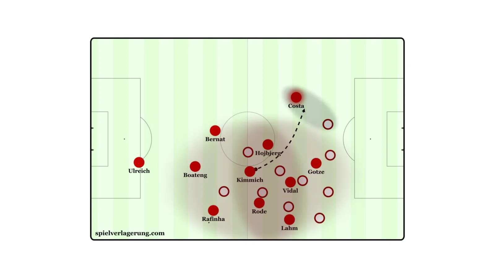
这并不把昨天的战术家打上化石的标签。范式会一直繁荣，直到它们自身的对称性把它们闷死；每一个稳固的结构都会吸引将它推翻的"破解"。线性思维也可以相当有用。恰恰相反：正如我们在文末的"版本答案"部分所见，大多数发明都是干预，而正是进化的流动不仅迫使它们出现、也使它们成为可能：如果没有人打盯人，你就不可能去破解盯人，对吧？而在每一个万无一失的体系背后，都有一串把它变得必要的愚人。我们的旅程只是成为那些使进步成为必需、或使其成为可能的愚人中的一部分。我们只是自愿投身于下一波有用的愚人，把边界往外推，好让未来的教练把它们常态化。
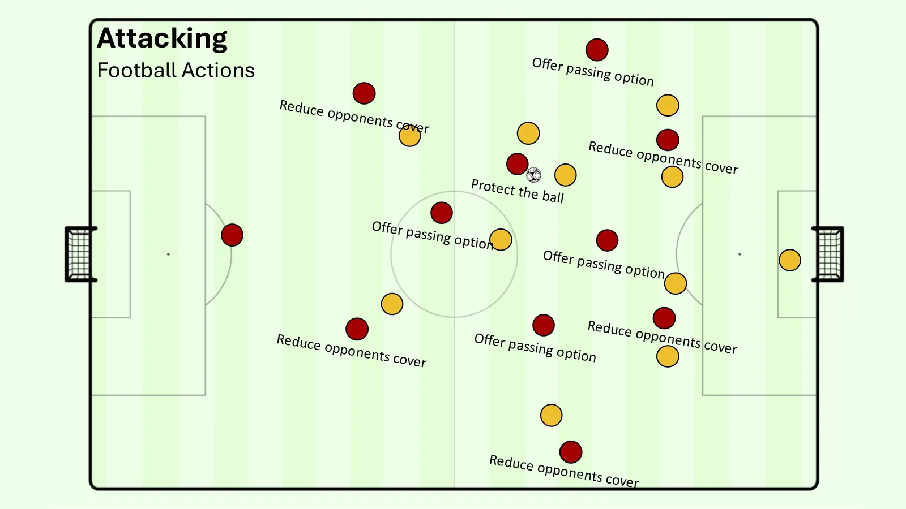
斜着切、横着切、竖着切，归根结底，比赛关乎球员：他们的任务，以及他们解决任务的能力。
总之，旧理念并未消亡，它们只是被丰富了。一些垂直传球仍会推动比赛向前，给我们带来令人屏息的"Steil-Klatsch-Steil（直-撞-直）"或反击。一些横向横移仍会再次打开空间，给我们呼吸的氧气。真理仍系于一些公理：横向让你安全；纵向让你被杀、或者被加冕。而同样的公理还说：斜向让你在仍在运动时就能做出决定。通过把球队编织进"前-侧"的斜向连接，教练们创造出一个能自我修复的网络，它成倍增加传球线路、拉伸防守形状、加速转换，甚至反向驱动逼抢。几何很简单；它在整场比赛中复合累积的优势，却绝不简单。当然，现实很少在球场上赐予教科书式的棋盘，但想象它仍有价值。但愿我们这些弄臣做到了。
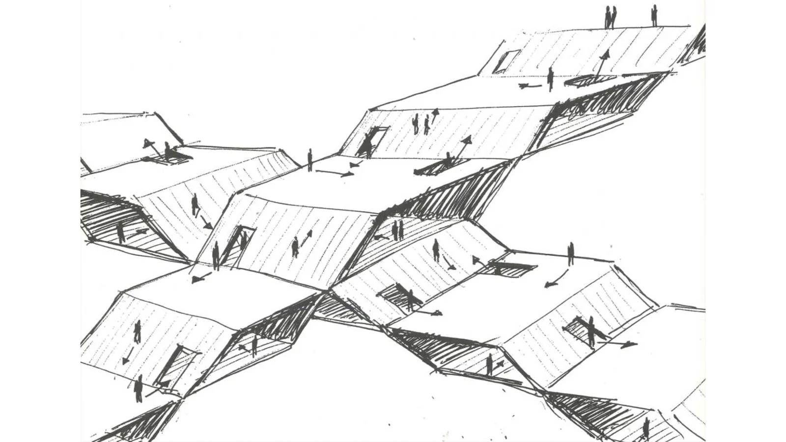
附言：本文是用 Google、但没有使用 ChatGPT 写成的。与机器作战，我们永远不会赢，也根本没有理由去战。与其用惊恐（Fright）、逃避（Flight）或战斗（Fight），我们不如想想"朋友（Friend）"。尽管如此，一点竞争总是有趣的。所以我们投入了一点点，用一段好的提示词和 AI 写了一篇同主题的竞争文章。你可以在这里找到它。通过与它对比、给我们反馈，以帮助我们改进。谢谢。
作者：JD / Judah Davies。邮箱：[email protected]
文末评论（原文 1 条）
- BRIAN（2026-06-18）：我记得曾几何时，"某个球员是一维的"被当作一种侮辱（只会进攻/回防）。穆勒更青睐奥利塞而非凯恩去赢金球奖，尽管凯恩拥有更多属性（回撤、转移球、站位、得分……）。我们探索空间的努力成果丰硕，但我们走得太远了，现在竟敢让时光倒流。穆勒是近代最"一维"的球员之一，而正因如此他才如此难以被"理解"。他是梅西的克星，多次击败梅西（8-2、两回合 7-0、世界杯决赛，仅举几例）。瓜迪奥拉的巴萨过去是、现在仍是灵感，但那是那个时代/时期的足球。我们不要试图把时钟拨回去，而应不断无休止地创新，否则巴黎圣日耳曼会继续统治。